Welcome: AI Images Are Often Drafts
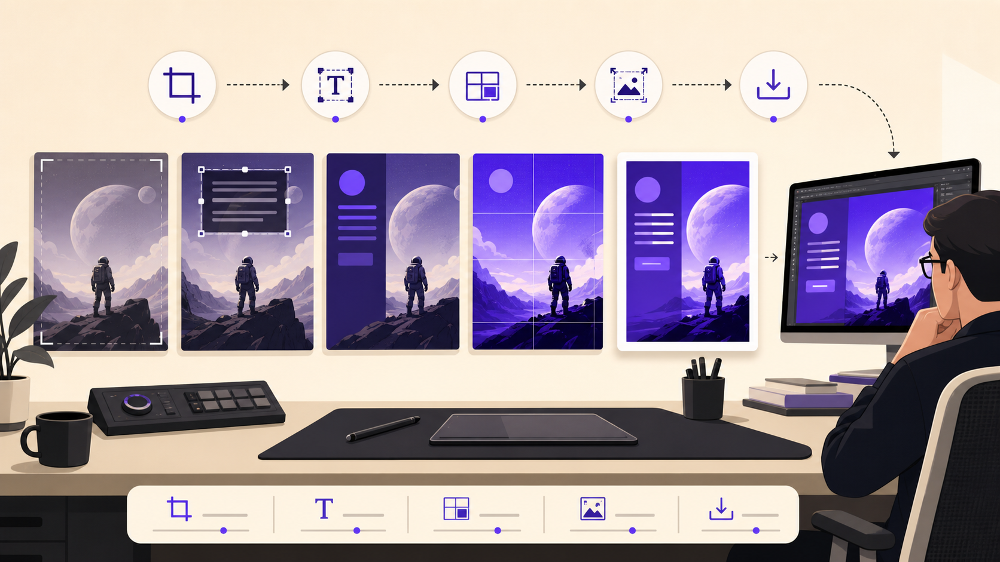
Lesson 9 turns AI image generation into a production lab. You will decide when AI output is only a draft, when manual typography is required, and when resolution enhancement helps or harms the final asset.
Readiness check
Name one poster, slide, label, interface, or communication task where exact readable text matters.
Learning Objectives
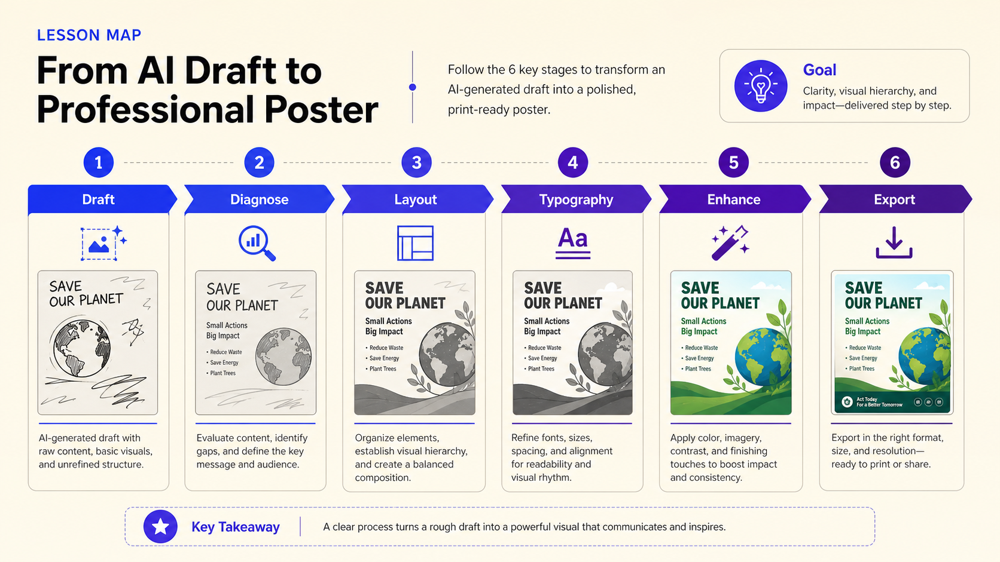
- Explain why many AI image generators struggle with readable text and typography.
- Identify when AI-generated text may be acceptable and when text should be added manually.
- Design a hybrid workflow combining AI-generated imagery with conventional design tools.
- Create a poster-style visual using an AI-generated background and manually controlled typography.
- Define resolution, upscaling, resolution enhancement, artifacts, and invented detail.
- Evaluate when and why an image should be upscaled or left unchanged.
- Compare original and enhanced versions for sharpness, artifacts, invented detail, and usability.
- Document the full process from generation to typography, enhancement, export, and evaluation.
Why AI Text Often Fails
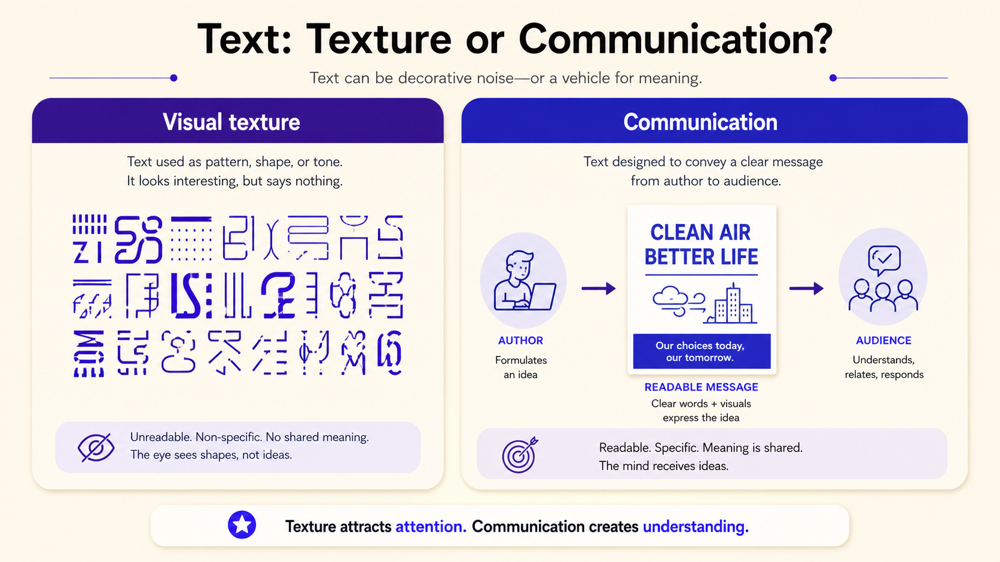
AI-generated images can look impressive but still fail as usable design assets. Text inside an image is symbolic language, not only visual texture. One wrong letter can make a poster, label, interface, brand asset, or educational graphic unusable.
Professional rule
Use AI for atmosphere, exploration, composition studies, and poster backgrounds. Use design tools and human judgment for exact words, hierarchy, alignment, contrast, readability, and final communication.
Gap-Fill 1 — Text Is Communication
Complete the statements with the missing terms.
Activity 1: Text Failure Detective
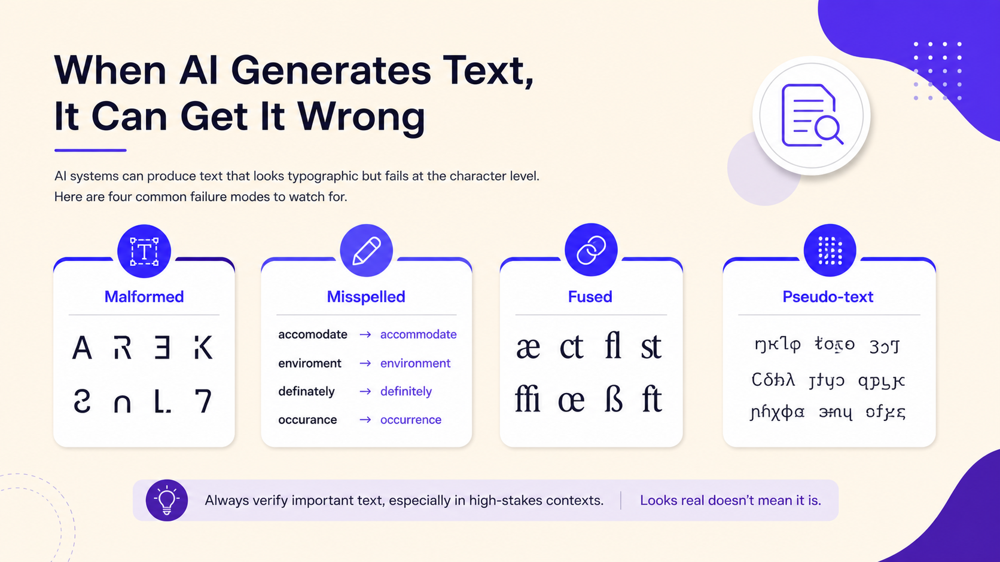
Instructions: Inspect a poster-like AI image with generated text. In SCORM, select the diagnostic card that best describes each visible problem.
| Poster area inspected | Failure card selected | Evidence | Final usability |
|---|---|---|---|
| Title | Usable / Concept-only / Not usable | ||
| Subtitle | Usable / Concept-only / Not usable | ||
| Background signs or labels | Usable / Concept-only / Not usable |
Hybrid Poster Workflow: AI Background + Manual Typography
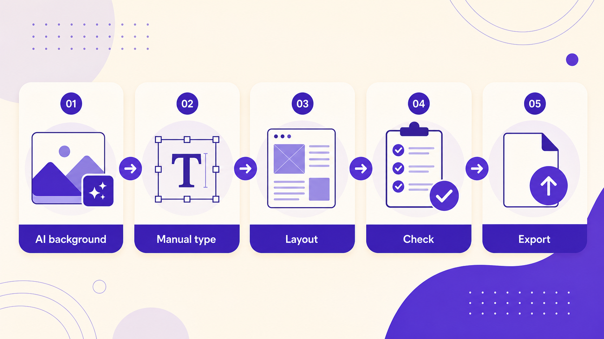
A hybrid workflow combines AI-generated material with conventional design decisions. Instead of asking the image model to complete the whole poster, ask it to create the background, atmosphere, composition, and space for future typography.
Useful prompt language for backgrounds
vertical poster background; large empty space for typography; clean background; minimal composition; no text; no letters; no logos; no watermark; balanced composition; negative space; high contrast area for title.
Activity 2: AI or Human? Production Role Sort
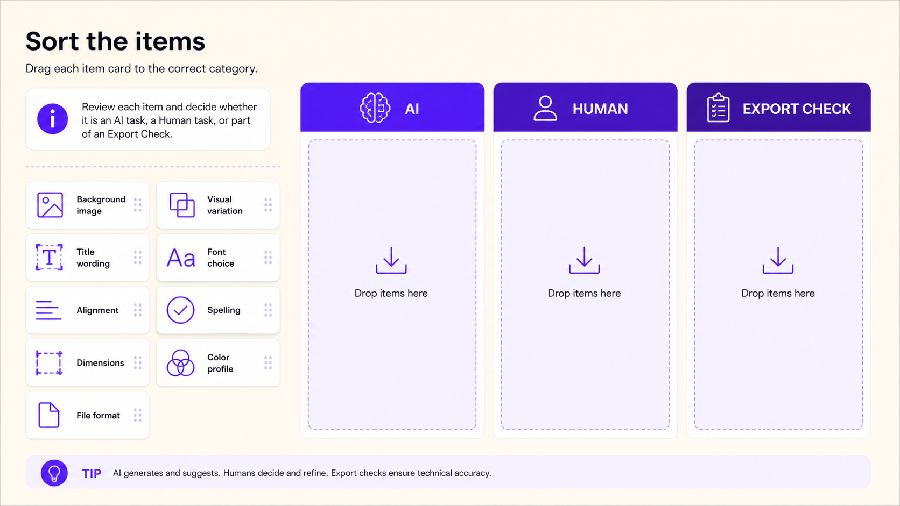
Instructions: Sort each production card into AI BACKGROUND, MANUAL DESIGN, or CHECK BEFORE EXPORT. Then review the feedback.
Which card was hardest to classify, and why?
Prompt for Negative Space
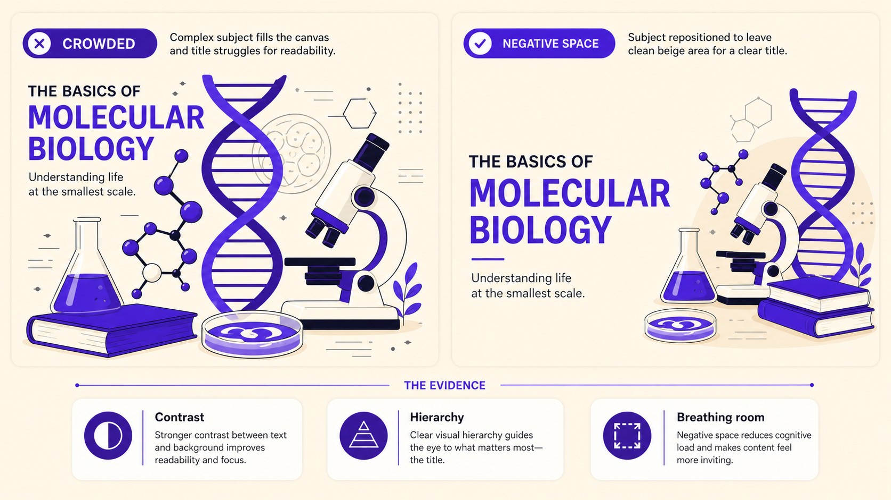
Empty space is not wasted space. It is a design resource that gives manual typography a readable place to sit.
Gap-Fill 2 — Build the Poster Background Prompt
Activity 3: Hybrid Poster Builder
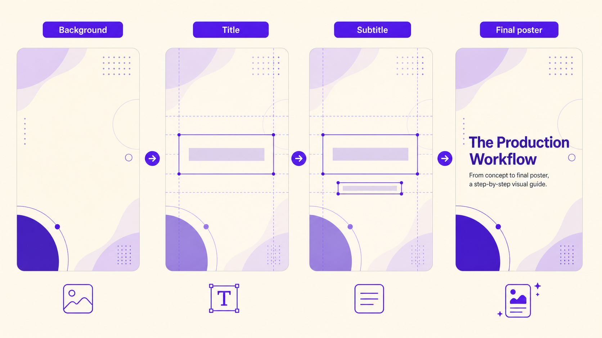
Instructions: Follow the steps. Save evidence after each major decision so the process can be assessed, not only the final image.
| Step | Learner action | Evidence to save |
|---|---|---|
| 1. Generate background | Use or adapt the background prompt. Avoid text, letters, logos, and watermark. | Prompt + first output screenshot. |
| 2. Select usable background | Choose the version with the best empty space, contrast, and composition. | Selection reason. |
| 3. Add title manually | Use a design tool to add: AI IMAGE GENERATION. | Screenshot of typography layer or layout. |
| 4. Add subtitle | Add: Photography – Design – Audiovisual Production. | Final text plan. |
| 5. Adjust typography | Check hierarchy, contrast, alignment, spacing, and readability. | Before/after layout note. |
| 6. Export draft | Export as a poster-style image. | Draft export file or screenshot. |
| Design criterion | Question | Your answer |
|---|---|---|
| Message | Does the image support the course topic? | |
| Readability | Can the title be read at first glance? | |
| Contrast | Is there enough contrast between text and background? | |
| Hierarchy | What does the viewer read first? | |
| Alignment | Does the layout feel intentional? | |
| Workflow | What did manual typography solve? |
Activity 4: Typography Control Lab
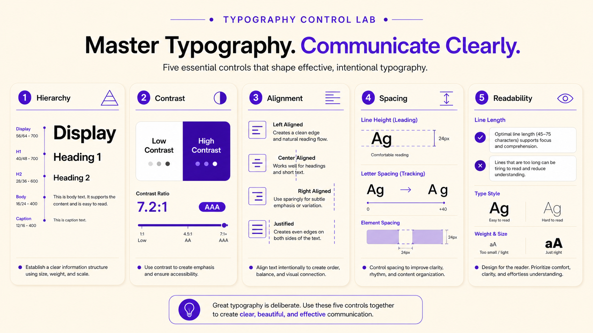
Instructions: Match each poster problem to the typography principle that would fix it. Then apply the same critique to your own poster draft.
Upscaling, Enhancement, and Invented Detail
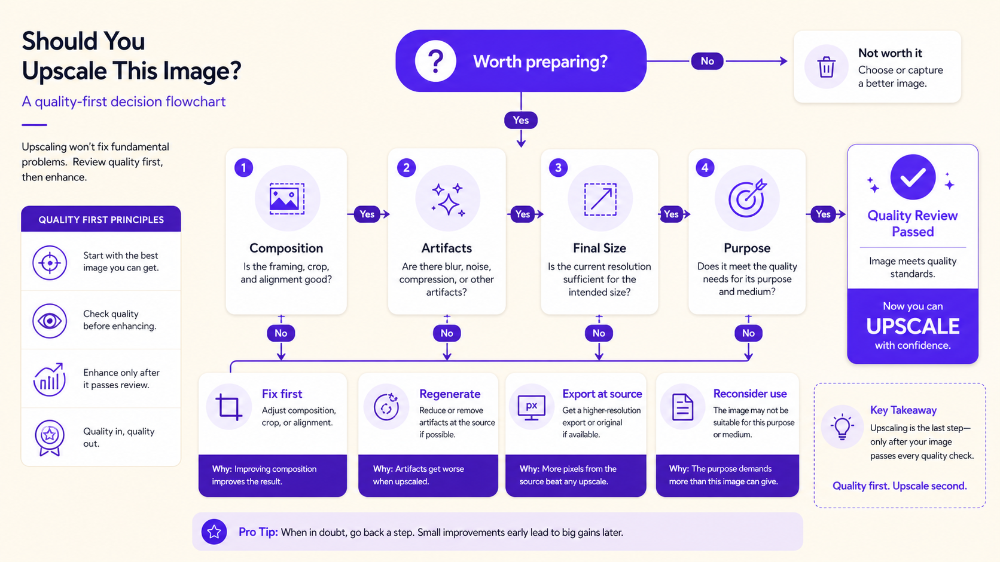
Upscaling increases the pixel dimensions of an image. Resolution enhancement may also include sharpening, denoising, texture reconstruction, face restoration, artifact reduction, and detail enhancement.
Critical rule
A sharper image is not always a better image. Enhancement may improve apparent quality while also inventing detail, amplifying artifacts, or making false visual information more convincing.
Gap-Fill 3 — Enhancement Vocabulary
Activity 5: Upscale or Wait? Decision Room
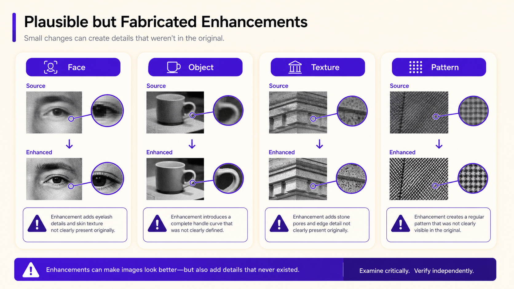
Instructions: For each room, choose one door: UPSCALE, REPAIR FIRST, DISCARD / REGENERATE, or KEEP ORIGINAL. Justify your decision.
Write your decision sentence: I chose ______ because the image is ______ and the final use requires ______.
Activity 6: Original vs Enhanced Quality Check
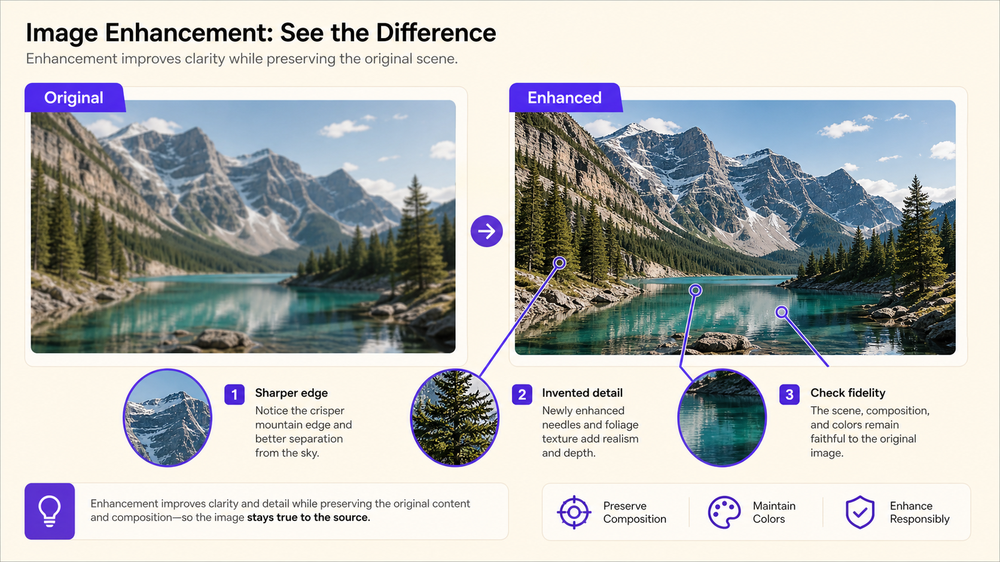
Instructions: Use the poster from Activity 3 or an instructor-provided image. Record the original and enhanced versions. Do not judge only by size or sharpness.
| Criterion | Original | Enhanced | Better / Worse / Same | Evidence |
|---|---|---|---|---|
| Resolution / pixel dimensions | ||||
| Sharpness | ||||
| Background texture | ||||
| Typography readability | ||||
| Artifacts | ||||
| Invented detail | ||||
| Color changes | ||||
| Overall usability |
Activity 7: Poster Workflow Critique
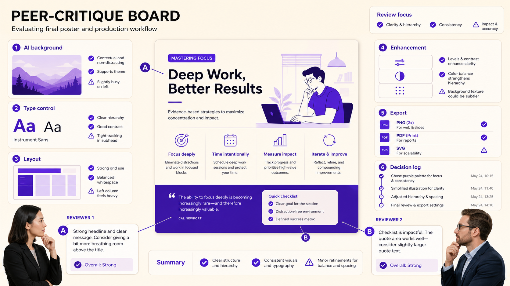
Instructions: Present your poster process to a peer. Show the prompt, selected background, manual typography, enhancement decision, and final export. The peer gives one strength, one risk, and one next improvement.
| Critique area | Peer question | Peer feedback |
|---|---|---|
| Background selection | Why was this background chosen? | |
| Typography | Is text readable and hierarchically clear? | |
| Image-text relationship | Do visual atmosphere and message support each other? | |
| Enhancement | Did upscaling help or introduce problems? | |
| Documentation | Could another student understand the workflow? | |
| Next improvement | What single change would improve the asset? |
Final Boss Challenge: Production-Ready Poster Asset
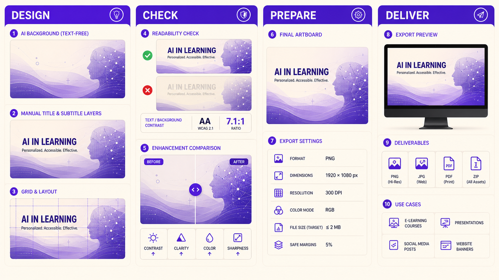
Challenge brief
Create a poster-style visual for the course topic: AI IMAGE GENERATION. Use AI to create the visual background, add all final typography manually, decide whether to upscale, and document why the result is usable, partially usable, or concept-only.
| Part | Required action | Evidence |
|---|---|---|
| A. Background prompt | Write a prompt that asks for a poster background with empty typography space and no AI-generated text. | |
| B. Background selection | Choose the most usable output and explain why. | |
| C. Manual typography | Add title and subtitle manually. | |
| D. Enhancement decision | Choose upscale / no upscale / repair first and justify. | |
| E. Export and evaluate | Export and classify as usable, partially usable, or concept-only. | |
| F. 60-second explanation | Explain the process, not only the final visual. |
| Rubric criterion | Excellent evidence | Needs revision |
|---|---|---|
| Readable typography | Title and subtitle are correct, clear, aligned, and visible. | Text is hard to read, misspelled, crowded, or AI-generated. |
| Hybrid workflow | AI supports background while manual design controls communication. | Workflow asks AI to solve final typography or layout precision. |
| Enhancement judgment | Upscaling decision is justified and artifacts are checked. | Image is polished before major problems are solved. |
| Documentation | Prompt, tool, typography decisions, enhancement, export, and evaluation are recorded. | Process is difficult to reproduce or explain. |
Reusable Activity Templates
Template 1 — Text Failure Log
| Prompt | Tool | AI text result | Failure type | Usable? | Next action |
|---|---|---|---|---|---|
Template 2 — Hybrid Poster Workflow Log
| Stage | Decision / evidence | Why it matters |
|---|---|---|
| Background prompt | ||
| Selected output | ||
| Manual title | ||
| Subtitle and hierarchy | ||
| Contrast/alignment check | ||
| Enhancement/export decision |
Template 3 — Upscaling Evaluation Table
| Criterion | Original | Upscaled | Evidence | Final judgment |
|---|---|---|---|---|
| Resolution | ||||
| Sharpness | ||||
| Artifacts | ||||
| Invented detail | ||||
| Typography readability | ||||
| Final use suitability |
Final Assessment
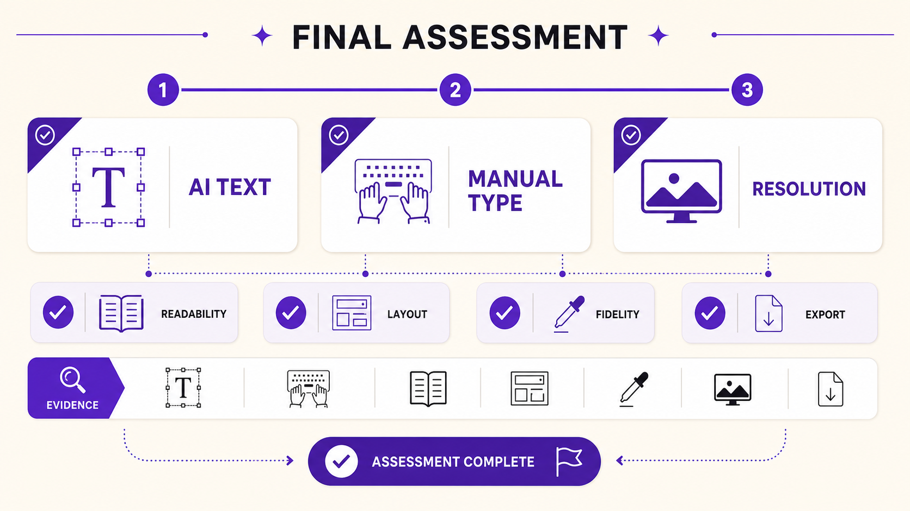
Short answer
| Question | Your answer |
|---|---|
| Explain why a hybrid workflow is useful for poster design with AI-generated imagery. | |
| Write an improved prompt for generating a poster background that will later receive manual typography. |
Exit Ticket and Completion
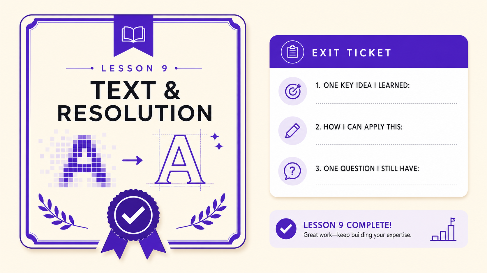
AI can generate visual possibilities, but design turns them into communication. A usable poster workflow generates a background, avoids fake text, preserves empty space, adds typography manually, checks hierarchy and contrast, and evaluates whether enhancement is appropriate.
| Prompt | Your answer |
|---|---|
| One AI text problem I can now identify is... | |
| One situation where manual typography is necessary is... | |
| One reason not to upscale immediately is... | |
| One sign of invented detail is... | |
| My professional rule before publishing an AI-assisted poster is... |
| Task | Complete |
|---|---|
| Completed the text failure gap-fill. | ☐ |
| Diagnosed at least three AI text failure types. | ☐ |
| Sorted production tasks into AI or manual design roles. | ☐ |
| Built or planned an AI background + manual typography poster. | ☐ |
| Evaluated hierarchy, contrast, alignment, and readability. | ☐ |
| Completed the upscale-or-wait decision challenge. | ☐ |
| Compared original and enhanced versions for artifacts and invented detail. | ☐ |
| Participated in peer poster critique. | ☐ |
| Completed the Final Boss production-ready poster challenge. | ☐ |
| Completed the exit ticket. | ☐ |